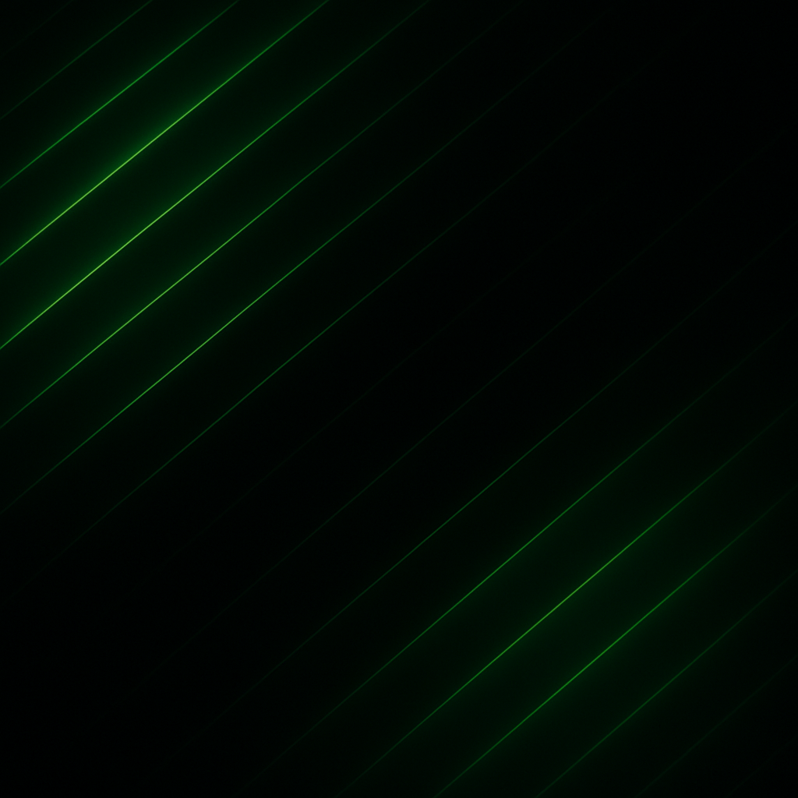
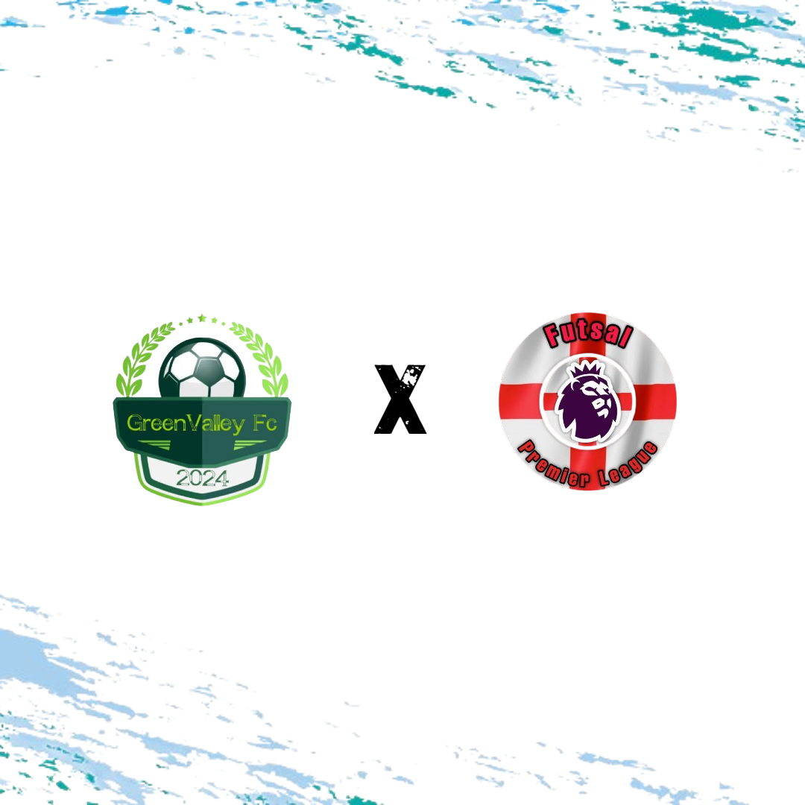
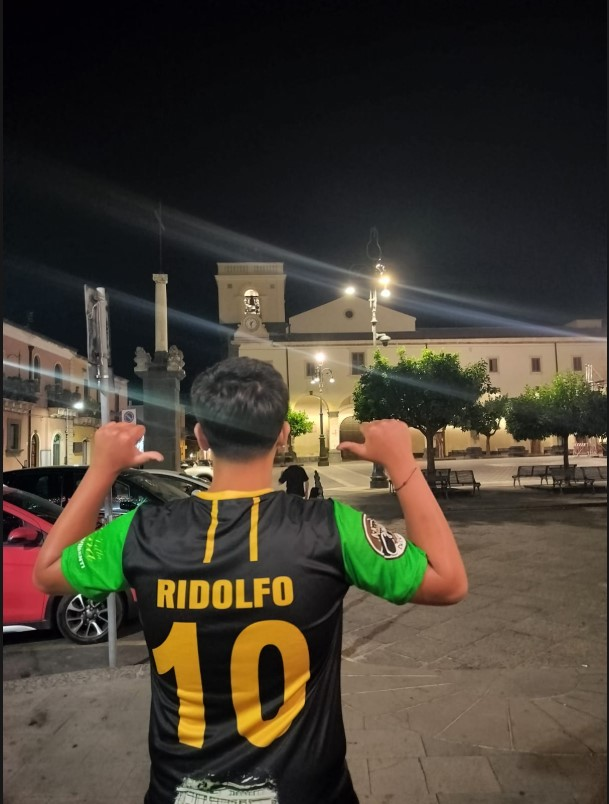
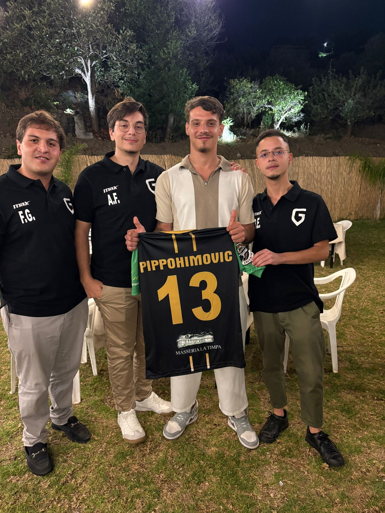
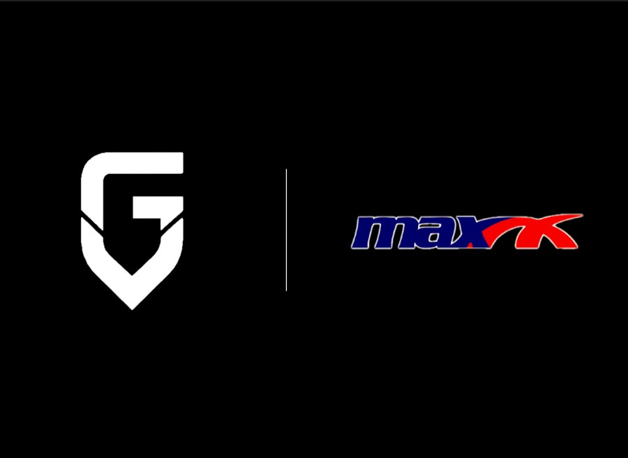
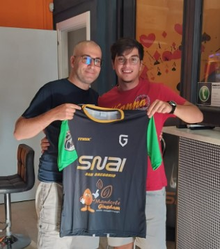

Foto ufficiale pre-campionato.
Archivio Visivo

Foto ufficiale pre-campionato.

Fase a gironi: intensita e organizzazione.

Finalizzazione in area nel match di cartello.

Palla al piede e lettura degli spazi.

Presentazione kit e collaborazione tecnica.

Networking con i partner del progetto.